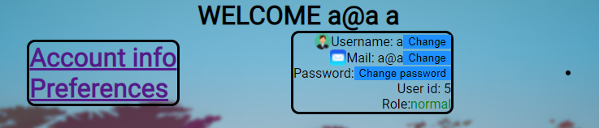
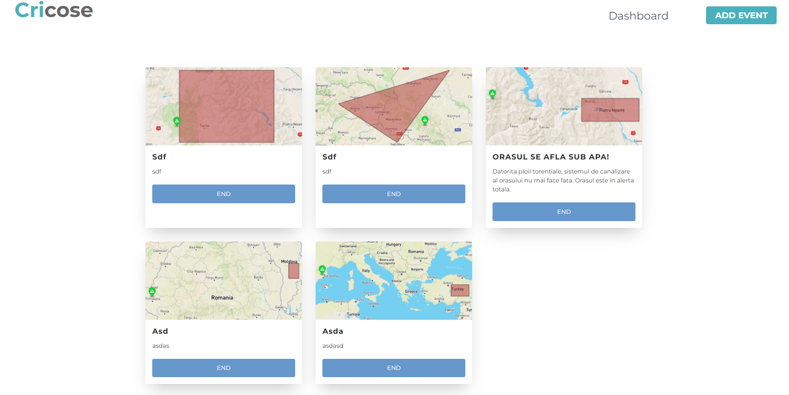
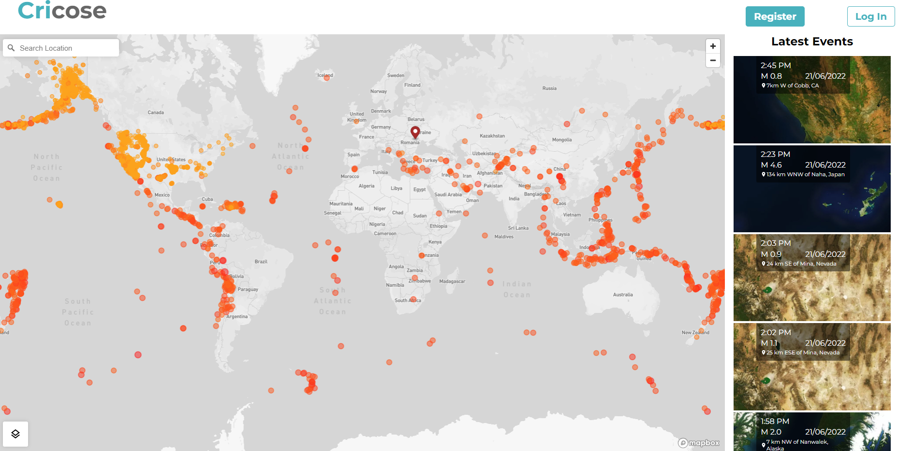
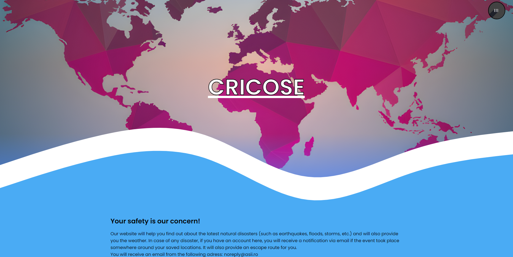
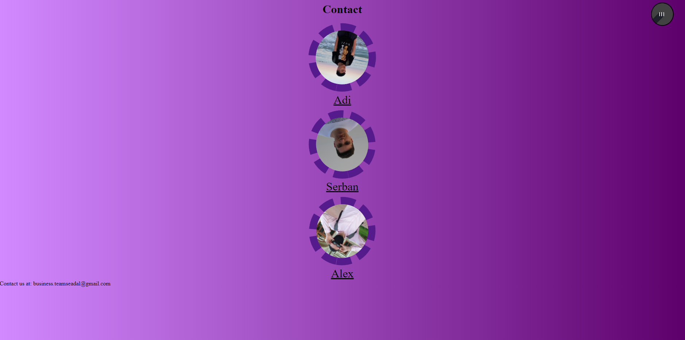
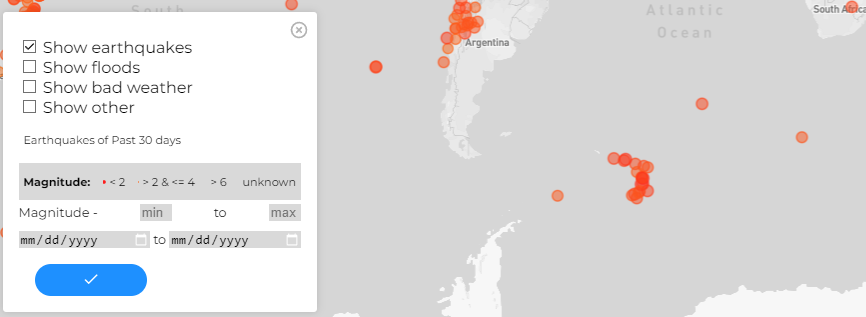
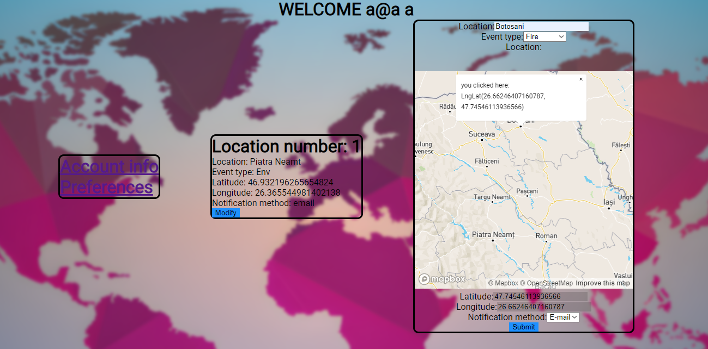
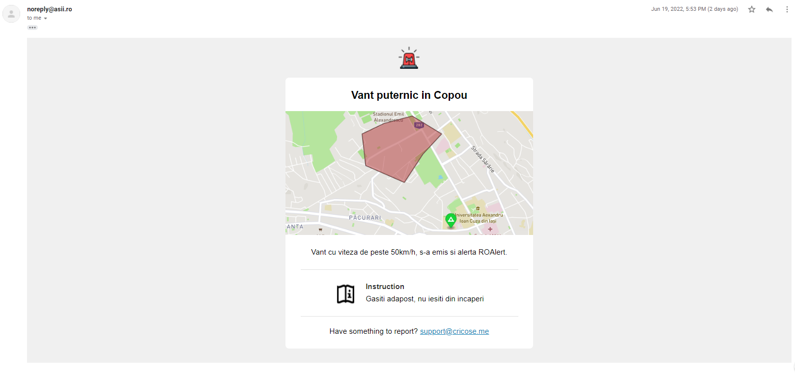

3.1 Tehnologii utilizate
Tehnologiile folosite pentru acest proiect sunt HTML5, CSS, JavaScript
(interfață) si NodeJS (back-end). Aplicația are la bază servere HTTP create cu ajutorul
API-ului HTTP din Node. Serviciile oferite (logarea, adăugarea evenimentelor) sunt încărcate
în servere NodeJS asemănătoare. S-au folosit tehnologiile dispuse pentru NodeJS: npm (Node Package Manager) pentru instalarea
librăriilor (bcrypt, jsonwebtoken, query-string, axios, node-postgres etc.) folosite.
Probabil cel mai important API folosit este cel oferit de Mapbox folosit pentru afișarea evenimentelor din bazele de date folosite
de website. Mapbox oferă un API complex, care poate afișa chiar pe marcaje informații despre evenimente. Utilizatorii pot obține informații despre
orice eveniment dând click pe harta interactivă. Pentru inițializarea hărții este nevoie doar de includerea unor fișiere script care se găsesc în documentație
la Mapbox. S-au folosit alte librarii încarcate folosing un CDN sau scripturi. S-au folosit: jwt-decode, Cookie.js (preia cookie-uri direct dupa nume și altele),
S-au folosit alte librarii încarcate folosing un CDN sau scripturi precum: jwt-decode, Cookie.js (preia cookie-uri direct dupa nume și altele) etc.
Bcrypt
Folosit pentru hashuirea parolei.
JWT (JSON Web Token)
Folosit pentru crearea unui token folosit în cookie-ul responsabil pentru păstrarea datelor de logare (și altele, menționăm mai jos).
Este o componentă esențială funcționării site-ului.
query-string
Folosit pentru parsarea query-urilor prezente în URL-ul requesturilor. Returnează un JSON cu toți parametrii query-ului precum și URL-ul primit.
Axios
Funcția fetch nu este implementată în NodeJS, deci pentru a folosi fetch-ul trebuie abordată o implementare precum node-fetch sau Axios.
pg (node-postgres)
Pentru baza de date s-a folosit o bază de date relațională. Am ales să folosim node-postgres pentru simplicitatea acesteia și pentru documentația solidă
dispusă. Modulul pg a oferit conectarea la baza noastra de date ușoară și rapidă. Funcțiile folosite ne-au ușurat debuggingul, deoarece erorile specifice
unui DBMS se afișau în consola serverelor care foloseau modulul.
3.2 Pagini

Account Info
Prin intermediul acestei pagini utilizatorul are posibilitatea de a-și updata username-ul, parola și email-ul. Tot aici acesta iși poate adăuga locațiile
de interes.

Dashboard
Dashboard-ul este accesibil doar celor ce au rolul de admin în contul lor. De aici se pot încheia evenimentele adaugate de către autorități.

Map
Centrul atenției, pagina Map afișează cu ajutorul API-ului Mapbox toate evenimentele din bazele de date folosite pe harta interactivă.
Evenimentele sunt dispuse ori sub formă de marcaje care pot fi apăsate pentru detalii, ori sub formă de zone (unde evenimentul acoperă) o zonă mai mare.
Pe lânga asta, în dreapta apar imaginii din satelit (folosind tot API-ul de la Mapbox) cu zona afectată.
Depinzând de opțiune, există mai multe filtre. Majoritatea evenimentelor au ca filtru comun intervalul de timp în care se petrec. API-ul implicită
pentru inundații, cel oferit de UK Environment Agency nu are ca filtru acest lucru (dacă se caută date care conțin și coordonate ale locației), caz special
unde se pot obține doar ultimele X evenimente.
Interesant este API-ul oferit de NOAA National Weather Service, deoarece requestul de GET necesar pentru obținerea datelor este blocat de CORS.
Cu toate acestea am dezvoltat site-ul primind datele de la acest service deoarece am folosit o extensie disponibilă pentru browser care scoate protecția CORS.
Important de menținut la acest API este că el nu afișează dezastre, el afișează prognoza meteo DOAR pentru locațiile serviciului. Am setat afișarea pe hartă
astfel încât prognoze precum ”thunderstorm” să se afișeze cu roșu.
Categoria ”other” reprezintă de fapt API-ului principal al site-ului. Diferența dintre acest API și cel deprecated este faptul că noul API stochează
date necesar protocolului CAP, precum și alte tipuri de evenimente, nu doar cutremure inundații și vreme rea fără câmpuri necesare protocolului.
Datele acestor evenimente sunt create in protocolul CAP și pot fi ulterior pasate altor site-uri care respectă acest protocol. Site-ul folosește un serviciu
în care printr-un request de GET se pot obține toate astfel evenimente.
Din păcate cu acest update s-a pierdut un feature important, acela fiind de da click pe o zonă afectată si de afla evenimentul. Protocolul CAP necesită folosirea unui poligon,
iar poligonul desenat in Mapbox nu poate fi apăsat.

Home
Pagina default "Home" are rolul prezentativ. Pe aceasta se află titlul site-ului si o scurtă descriere a acestuia.

Login
Sunt preluate datele introduse prin form (email, parola) si sunt cautate in baza de date. Dacă acestea au fost găsite, utilizatorului i se
va genera un cookie și va fi redirecționat pe pagina contului său. În caz contrat, un mesaj sugestiv va apărea pe ecran.

Înregistrare
Utilizatorii au opțiunea de a crea un cont pe platformă. La crearea
unui cont prin introducerea email-ului, username-ului si a unei parole. E-mailul trebuie sa fie unic in baza de date, deci nu pot fi create
mai multe conturi pe acelasi e-mail.
Parola odată ajunsă în server este hash-uită și stocată în baza de date alături de celelalte date păstrate așa cum au fost primite.

Contact
Pagină cu dezvoltatorii acestui site.

3.3 Experiența utilizatorului
Pagina principală a site-ului este alcătuită dintr-un mesaj de bun venit precum și o scurtă descriere a site-ului.
Pentru a accesa "inima" paginii, trebuie folosită bara de navigare invocată de butonul din colț sus dreapta.
Pagina cea mai de interes este Map.
Implicit pagina map afișează cutremurele înregistrate din ultima lună în API-ul USGS Earthquake Catalog precum și în API-ului siteului
deprecated (detalii menționate mai sus). Butonul din colț stânga jos deschide un meniu prin care se pot filtra evenimente.

Pentru a deveni un utilizator al serviciul de notificare, clientul trebuie să se înregistreze pe site folosind formalur de pe pagina register (accesat din login/map).
După care clientul va avea acces la pagina de utilizator. Aici se pot actualiza datele de logare.
Pentru a adăuga o zonă de interes se apasă butonul Preferences.

În coloana din mijloc apar evenimentele pentru care se vor trimite notificări în caz că apare vreun eveniment care include zona memorată (coordonatele).
În ultima coloană se pot adăuga noi evenimente de interes. Există doar câteva câmpuri necesare de completat, cel mai important fiind cel în care se selectează locația.
Când un eveniment este adăugat în baza de date al site-ului, utilizatorii care s-au înregistrat și care au la zone de interes o zonă afectată vor primi un email pe adresa
cu care s-au înregistrat.
